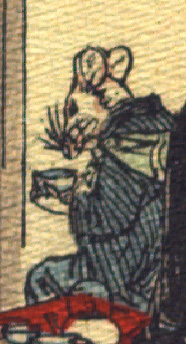

男の鼠。青色の着物をまとい、背に薄藍色の風呂敷包を担いでいる。赤布に覆われた縁台に腰掛け、手に茶碗を持っている。手は人間のものである。
著作者：J.Dautremer／出典：親書誌：U426_nichibunken_0111：Le mariage de la souris／日付：2006／資源識別子：U426_nichibunken_0111_0003_0003
Copyright (c)2010- International Research Center for Japanese Studies, Kyoto, Japan. All rights reserved.